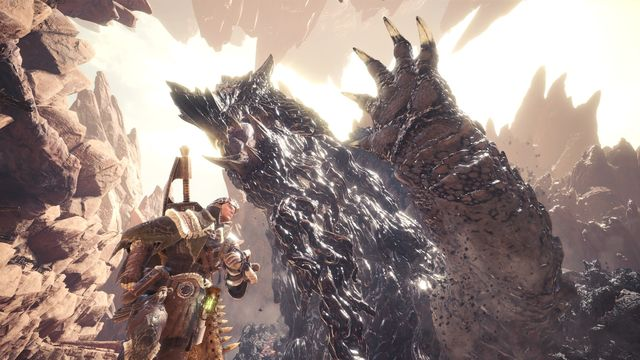
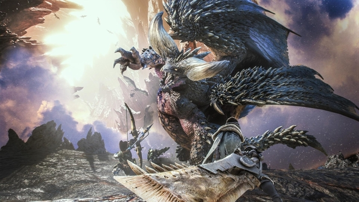
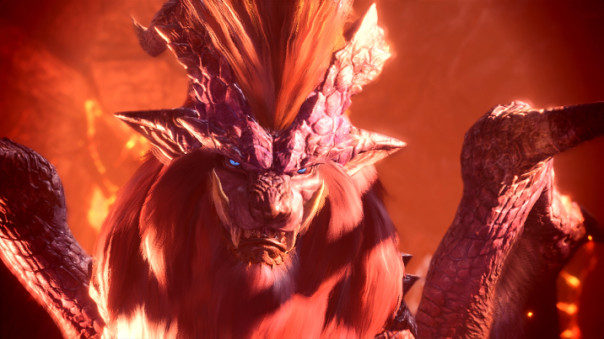
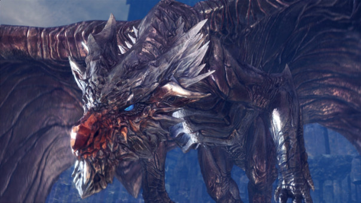
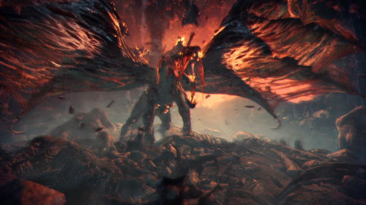
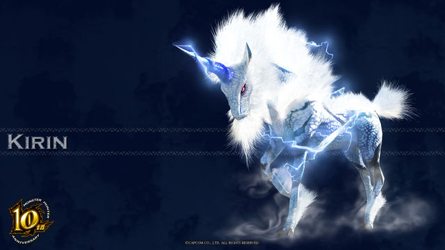
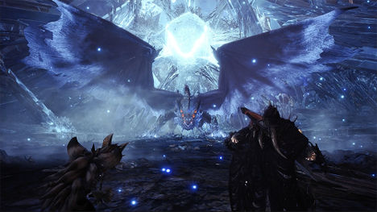

Présentation des dragons anciens
Les drangons anciens s'avèrent être les monstres les plus redoutables que vous aurez à affronter dans le jeu.
Il vous sera impossible de les capturer, les piéges n'ont égalemeent aucun effet sur eux. Il vous est nécessaire d'être bien préparé, pensez donc à manger avant de participer à ces quêtes, cela vous permettra de bénificier d'améliorations. Pensez également à vous munir de potions, méga-potions, potions secrétes et tout objets capable de vous aider durant votre chasse.
Vous affronterez 7 dragons dans Monster Hunter:World.
Le Zorah Magdaros
Le premier dragon ancien qui croisera votre route. Vous le rencontrez dès le début du jeu, lors de votre traversée pour rejoindre le nouveau monde, celui ci jaillit hors de l'océan et détruit votre navire. Vous l'affronterez à deux reprises par la suite, ce dragon étant gigantesque, votre seul objectif sera de le repousser

Le Nergigante

Vous vous batterez contre lui les premières fois sur le dos du Zorah Magdaros. C'est un adversaire particuliérement coriasse, les piques qui sont sur son dos lui procure une armure qu'il vous faudra détruire pour lui infliger plus de dégats. Méfiez vous de son attaque quand il est dans les airs, elle peut vous être fatale.
Le Teostra
Vous trouverez ce dragon au désert des termites et à la terre des anciens, il ressemble à une chimére, il a établie son nid dans la zone volcanique de la terre des anciens, faites attention aux flammes qu'il utilisera contre vous.

Le Kushala Daora

Un dragon recouvert de métal qui contrôle les vents, le combat contre ce dernier sera particuliérment frustrant, en effet ce dernier génére des tornades, plus il y en aura plus le combat se compliquera.
Le Val Hazak
Il s'agit d'un nouveau dragon ancien, vous ne le trouverez que dans le val putride. Il se cache parmis les carcasses de monstres, et dégage une aura pestilentielle, qui affectera votre jauge de vie si vous y êtes trop exposé, je vous recommande donc de vous équiper de talent de purification.

Le Kirin

Un monstre récurent de la série, une licorne qui utilise la foudre contre vous. Cette chasse est particuliérement frustrante du fait que le kirin bouge sans arrêt, la taille de ce dernier pose aussi un probéme, il est considérablement plus petit que les monstres,
il est donc nécessaire de bien porter vos coups.
Le Xeno'jiiva
Là encore un nouveau dragon ancien, il s'agit du dernier combat de l'histoire principale du jeu. Le Xeno'jiiva est le plus gros monstre que vous affronterez dans le jeu (le Zorah Magdaros mis à part), vous l'affronterez dans une zone qui lui est propre. Le combat contre ce dernier s'avère être plutôt long, même avec 3 autres compagnons. Ce dragon dispose de techniques redoutables qui peuvent vous être mortel. Ces points faibles sont ses pattes avant et sa queue qui vous sera possible de sectionner.

Suite à ces combats vous pouvez par la suite chasser des monstres alpha, il vous faudra au préalable découvrir leurs pistes sur les différentes cartes, une fois fait, vous aurez accés à des contrats pour les tuer. Les monstres alpha sont un défi en plus pour les chasseurs, tous les monstres que vous avez rencontré auparavant, peuvent être aussi en alpha. Ces monstres sont beaucoup plus coriaces que les originaux, chasser un dragon ancien alpha est réservé aux chasseurs de très haut rangs.
Des rumeurs récentes révélent, des futurs mis à jour qui intégreraient des dragons anciens rencontrés dans de précédents opus de la série! Capcom veut par se fait, faire durer son jeu dans le temps, les chasseurs du monde entier ont donc une belle carriére devant eux avant la retraite.